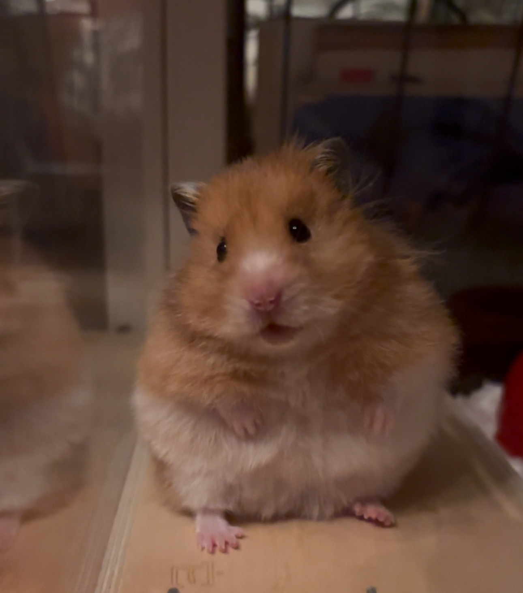
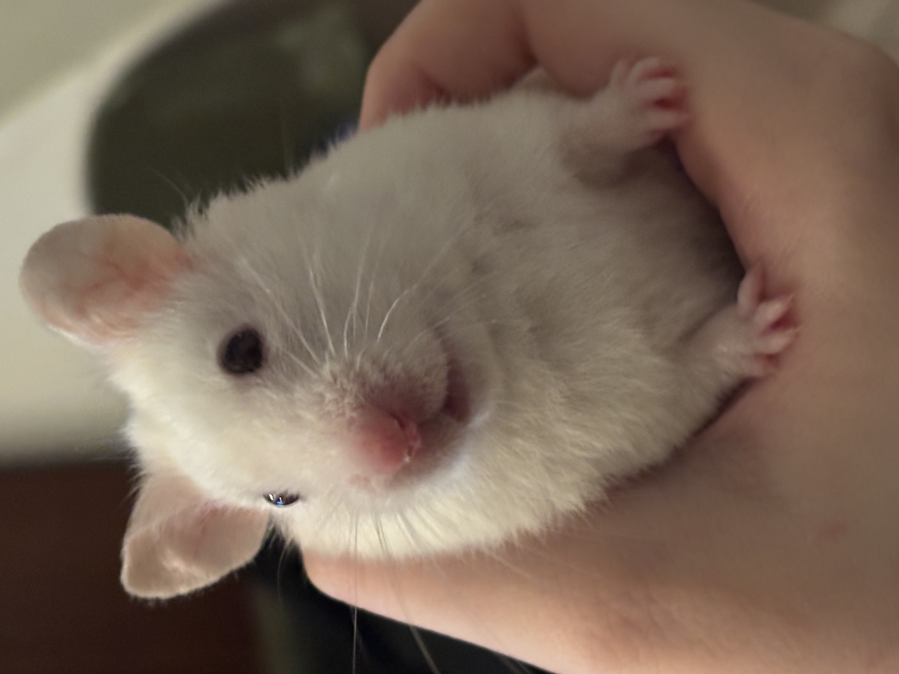
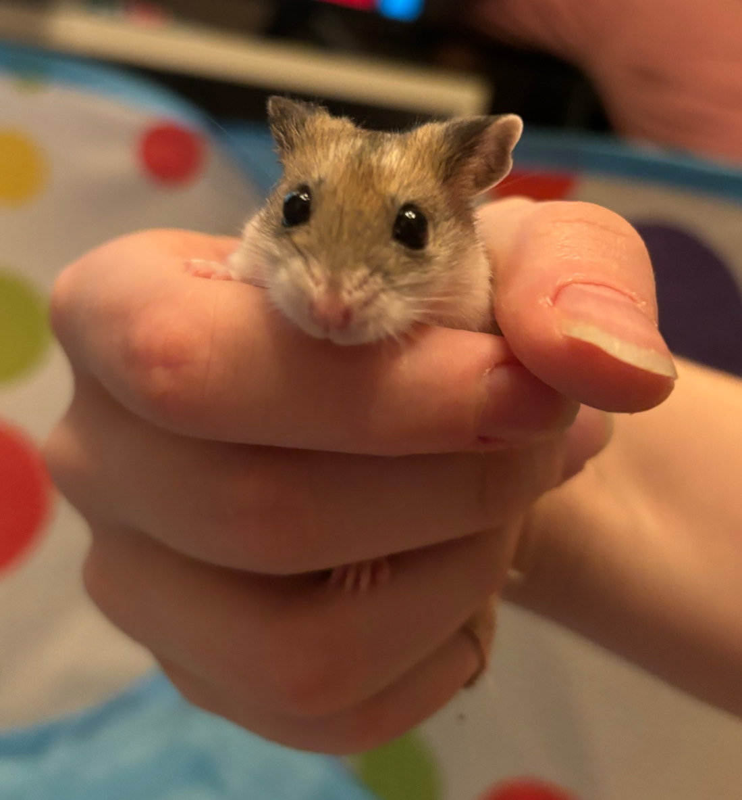
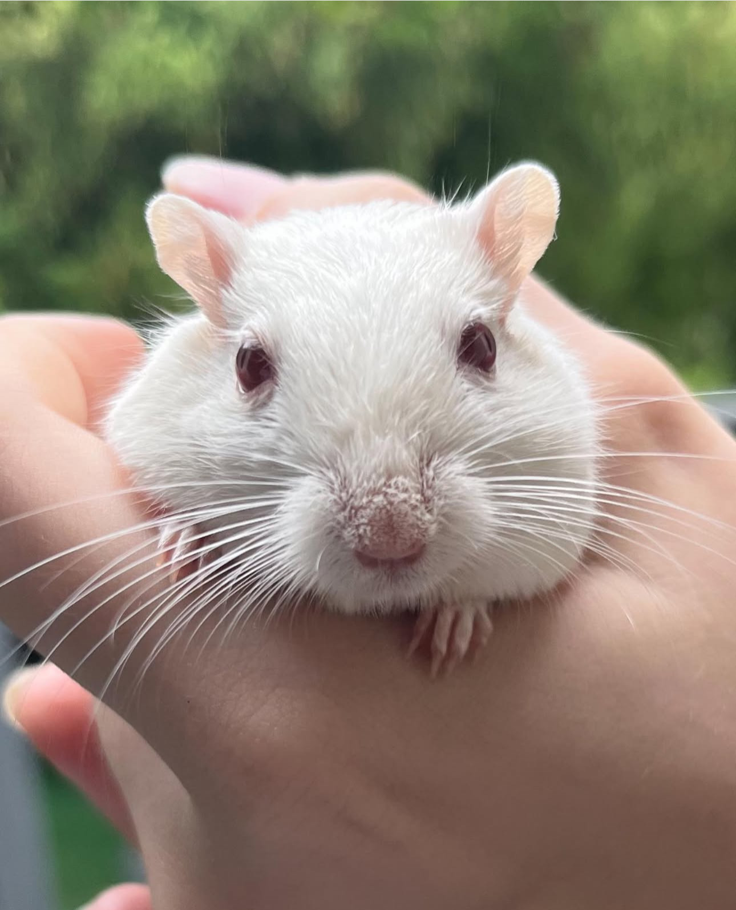

Big Chonk is a Teddy Bear hamster. He is 1 year old and a rescue. He enjoys:

Spicy is an albino Syrian hamster. She is 1 and a half and a rescue. She enjoys:
Coconut is an albino Syrian hamster, and Spicy's brother. He enjoys:
He is also very timid.

Shishi is a Chinese Dwarf hamster. She is 1 year old and a rescue. She is scared of humans and doesn't come out very often.

Mr. Tuna is NOT a hamster. He is an albino Gerbil. Mr. Tuna is 3 years old and a rescue. He enjoys: